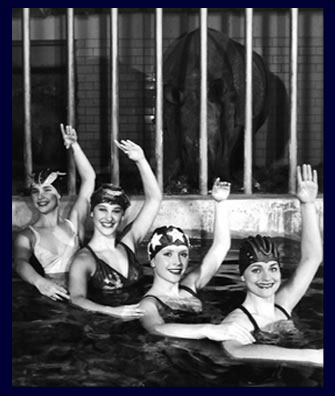

| |
 |
|
Wencke Boll, Fotografiert von Roland Horn
© 2001 Koehler & Amelang [ISBN 3-7338-0311-6] |
|
|
"In einer Stadt des Wandels und des Umbruchs repräsentiert
der Zoologische Garten eine Konstante im Herzen Berlins. Seit �ber 150 Jahren begleitet
er die Berliner - oder begleiten die Berliner den Zoo? Das Buch beschreibt die beiderseits
gelungene Begegnung: in entspannter Atmosphäre stellen sich prominente Zeitgenossen
aus Kultur, Politik, Wirtschaft und Sport in ganz besonderem Ambiente vor: Im Zoologischen
Garten, mit einem Tier ihrer Wahl; und sie erzählen von sich, den Tieren und von
Berlin." |
|
|
Das "Icke" darf nicht versiegen |
|
Seit 1990 schwimmen Yvonne Klehr, Karen Dobberstein, Katja Schljachow
und Sandra Schäfer in den Revuen des Friedrichstadtpalastes. Begonnen hatte alles mit
einer Anzeige in der Zeitung; der Friedrichstadtpalast
suchte 1988 Kunstschwimmerinnen für seine Kinderrevue. Yvonne war damals noch zu jung,
trainierte aber von diesem Zeitpunkt an Synchronschwimmen beim SV Empor Berlin. 1990 war es
soweit, sie durfte für die Kinderrevue "Die Sonne" schwimmen. Danach bestritten
sie gemeinsam viele Wettkämpfe und belegten vordere Plätze. 1995 plante der Palast
eine neue Revue mit Wasserballett und wandte sich an den Verein. Die vier Mädchen stellten
sich gerne zur Verfügung und gehören heute fast schon zum Inventar des
Friedrichstadtpalastes. Der Revue "Die Sonne"
folgten "Sterne", "Cinema", "Elements" und die "Berlin- Revue".
Gastauftritte beim "Kritikerpreis", der "Goldenen Henne", "Miss & Mister
Germany Wahl", Pool-Veranstaltungen und ein Video "Der Doofen" sorgten dafür,
daß keine der Frauen die Wettkämpfe vermißte.
Ein Nashorn ist auf den ersten Blick das Gegenteil von uns: Es ist eines der größten heute noch
existierenden Lebewesen auf dem Land, mit einem massiven Körper und kurzen, dicken Beinen. Wir
halten uns sehr oft im Wasser auf, bringen dem Publikum die Ästhetik sinnlicher Bewegungen näher,
und unsere Ballettbeine sind Hauptbestandteil einer jeden Kür. Aber wie so oft, erscheint eine
Gegebenheit auf den zweiten Blick doch etwas anders. Die Strukturen der Panzerung, die Muskulatur
der Tiere und ihre Bewegungen sind, aus der Nähe betrachtet, alles andere als plump. Wie in unserem
Sport ist die Eleganz im Detail versteckt.
Nashörner sind vom Aussterben bedroht. Früher waren sie weit verbreitet, heute existieren noch
fünf Arten. Hier zeichnet sich auch die Parallele zum Synchronschwimmen ab: Heute gibt es kaum
Vereine, die diese Sportart anbieten, geschweige denn Synchronschwimmer-innen, die diesen Wassersport
noch ausüben. Um so wichtiger ist es uns, den Menschen das Wasserballett wieder näher zu
bringen.
Berlin ist für uns eine Stadt der Vielfalt. Der Anonymität steht die Individualität der einzelnen
Person gegenüber. Entweder verwirklicht man sich selbst oder geht in der Masse unter. Die Auswahl
ist so variabel wie die Stadt an sich: Man kann dort sein, wo das Leben tobt oder verbringt
entspannende Momente in den zahlreichen ruhigen Oasen der Stadt. Ein gutes Beispiel ist der
Berliner Zoo. Mitten in der hektischen Stadt geht man durch ein Tor und betritt einen Ort, an den
man sich allein, mit der Familie oder seinen Freunden zurückziehen kann.
Die Gegensätzlichkeit beschreibt auch die Berliner Mentalität: Der Berliner will sich zwar gerne
darstellen und gefordert werden, trotzdem braucht er dann auch die Entscheidungs-freiheit, wieviel
Leben er um sich haben will.
An die Teilung Berlins erinnern wir uns nur sehr wenig. Ältere Menschen erleben diese Stadt wohl
immer noch als geteilt. Sie fahren in den "Westen" und erleben den "Osten". In den Köpfen der Menschen
ist eine Teilung daher unumstritten. Auch der Ausdruck "typisch Wessi" und "typisch Ossi" ist nicht
böse gemeint, wird aber dennoch oft gebraucht. Die tatsächliche Wiedervereinigung geht nur schleppend
voran, da selbst die Politiker sie nicht ausreichend fördern. Daß die Mauer gefallen ist, finden wir
alle gut. Wir sind sehr positiv eingestellt. Für uns ist es eine Erziehungsfrage, denn die Eltern sind
verantwortlich dafür, wie sie die Einstellung der Kinder und ihre Toleranz gegenüber dem Neuen
beeinflussen. Und tolerante Menschen gehören auch nach Berlin.
Die Zeit hilft über so manche vergangenen Wunden hinweg. So ist es auch nicht verwunderlich, daß
mittlerweile jeder Berliner - ob "Ossi" oder "Wessi" - redet, wie ihm die Schnauze gewachsen ist.
Das "Icke" darf nicht versiegen. Das macht einen großen Teil des Flairs dieser Stadt
aus. |
|
|